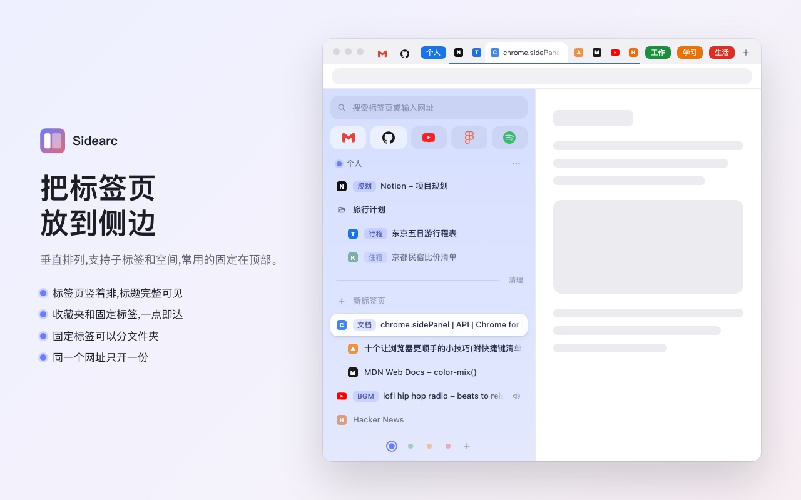
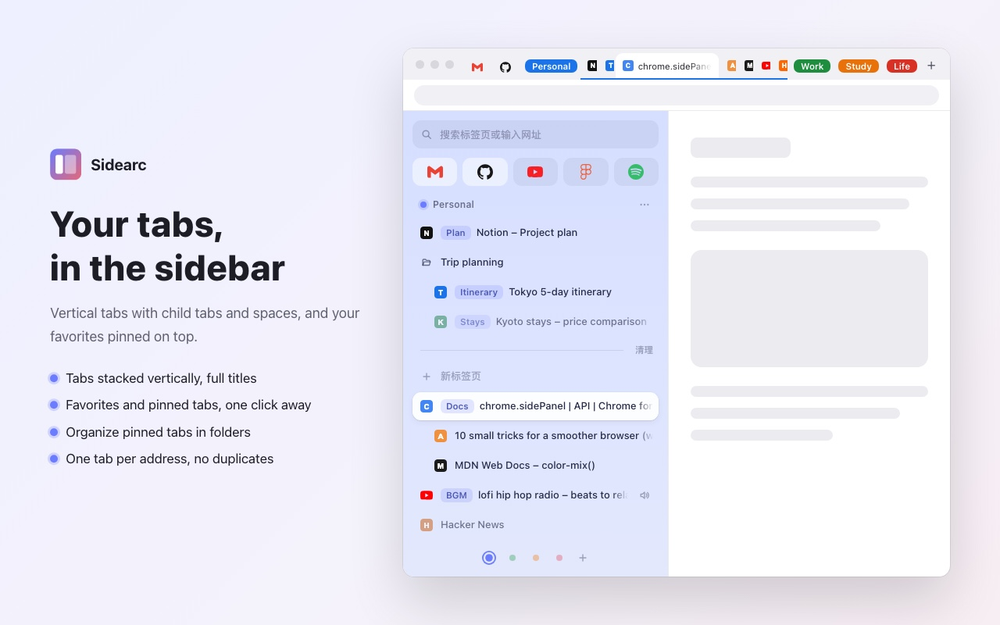

垂直标签栏Vertical tabs
标题完整可见,常用的一点即达Full titles, favorites one click away
标签页竖着排:点击切换、中键关闭、拖拽排序。顶部的收藏夹所有空间共用;固定标签关了也留着入口,再点就重新打开,还能分文件夹。 Tabs stack vertically: click to switch, middle-click to close, drag to reorder. Favorites at the top are shared by every space. Pinned tabs keep their spot when closed, reopen with a click, and can live in folders.
- 搜索栏:输入即过滤,回车打开网址或用默认搜索引擎搜索Search box: type to filter, press Enter to open a URL or search
- 相同网址只开一份,已经开着的直接切过去One tab per address: an open address just switches to its tab
- 正在发声的标签页,点喇叭就能静音Tabs playing sound show a speaker you can click to mute

